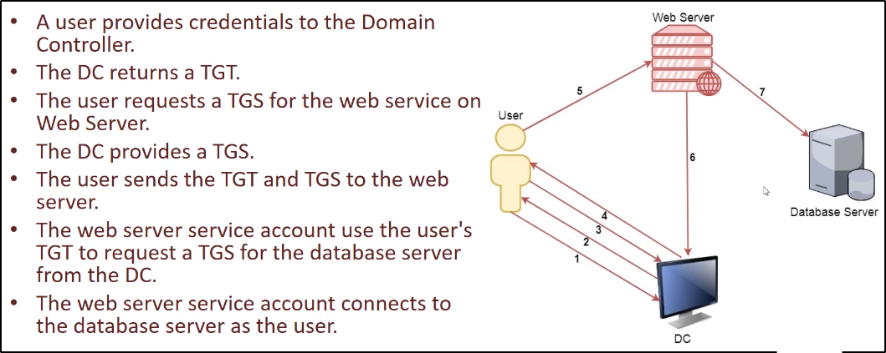

La Kerberos Delegation permette di "riutilizzare le credenziali end-user per accedere a risorse hosted su server differenti"
Questo è molto utile in un servizio multi-tier oppure
in applicazioni dove è richiesto il Kerberos Double Hop
Ad esempio:
Degli utenti si autenticano ad un web server
ed il web server fa richieste ad un database server.
Il web server può richiedere accesso a risorse
(ad alcune o tutte, in base al tipo di delegazione)
sul server database a nome dell'utente e non del web server service account
NB: Nel caso precedente, il service account per
il web service deve essere trustato per la delegazione,
al fine di effettuare richieste a nome di un utente.
Ecco un esempio:

Tipi di Delegation
Esistono 2 tipi di Kerberos Delegation:
1) General/Basic o Uncostrained:
Permette il primo hop server (il web server, nell'esempio sopra) di richiedere accesso a qualsiasi servizio o computer nel dominio
2) Constrained Delegation:
Permette il primo hop server (il web server, nell'esempio sopra) di richiedere accesso a specifici servizi su specifiche macchine.
Se l'utente non sta usando la Kerbero Authentication per autenticarsi
al primo hop serve, Windows offre Protocol Transition per transizionare
la richiesta a Kerberos.
NB: In entrambe le delegazioni, un meccanismo è richiesto
per l'impersonificazione dell'utente e per autenticarsi al
secondo hop server (nel nostro caso, il DB Server) come
l'utente richiesto.
Uncostrained Delegation
L'Uncostrained Delegation settata per un determinato service account,
permette la delegazione da parte dell'utente richiesto
ad OGNI SERVIZIO DI OGNI RISORSA presente sul Dominio.
Quando è abilitata, il Domain Controller piazza il TGT dell'utente all'interno del TGS (fase 4 dell'immagine precedente)
Quando viene presentato il TGS al server con Uncostrained Delegation,
il TGT è estratto dal TGS e conservato nel LSASS (
Local Security Authority Subsystem Service
). In questo modo il server può riusare il TGT utente per accedere
alle altre risorse a nome dell'utente.
Questo può essere usato per scalare i privilegi nel caso possiamo compromettere il Computer con Unconstrained Delegation e i Domain Admin connessi a quella macchina.
Ecco alcuni comandi utili:
NB: "DA" sta per Domain Admin. NB: Aggiungi l'opzione /export per il comando di Mimikatz per esportare i tickets!
Nell'esempio, vi sono le macchine "dcorp-dc" e "dcorp-appsrv":
Adesso accediamo con un utente sul computer che ha Unconstrained Delegation: nel nostro caso, usiamo un utente che abbia Admin Privileges locali su quella macchina dcorp-appsrv!
Carichiamo Mimikatz:
Nel caso non si possa importare lo script, possiamo importare lo scipt con Powershell Obfuscation: